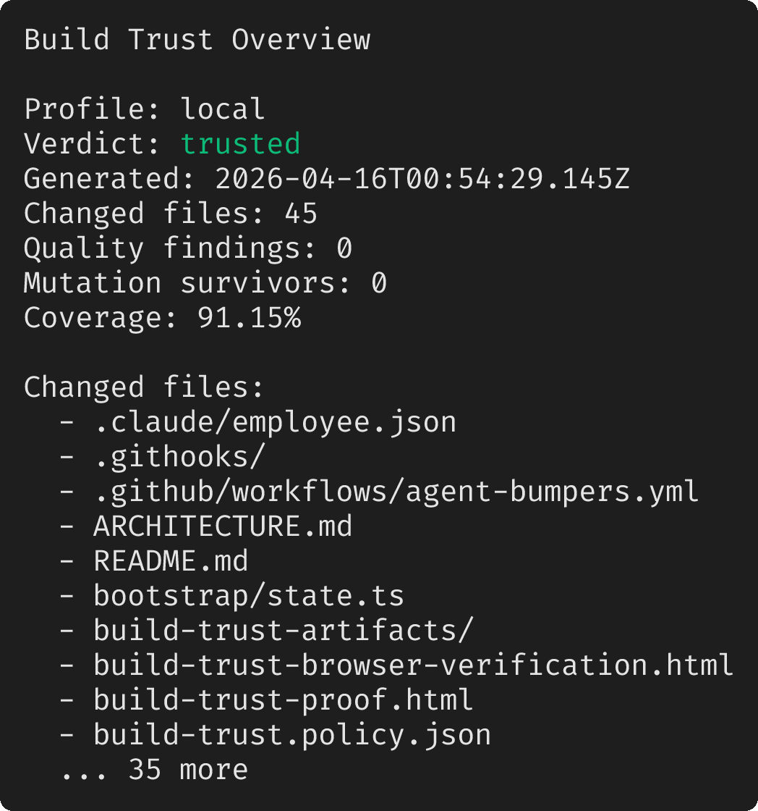
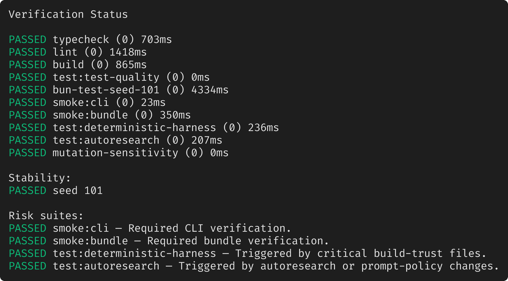
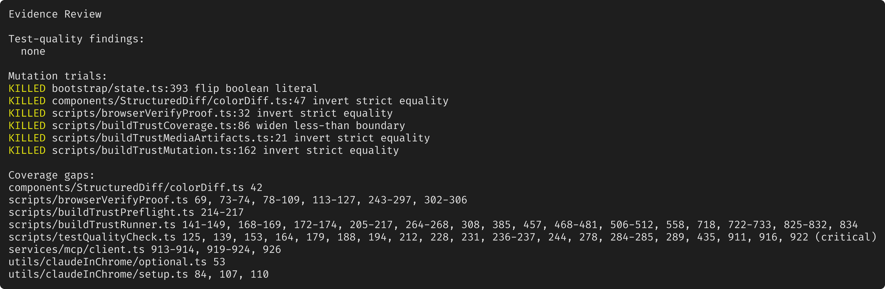

COVERAGE · WARNING
components/StructuredDiff/colorDiff.ts
Uncovered changed lines: 42
trusted
Filter actionable findings across commands, test quality, changed-line coverage, mutation sensitivity, and risk suites without manually scanning the whole proof.
No review items match the current filters.
COVERAGE · WARNING
Uncovered changed lines: 42
COVERAGE · WARNING
Uncovered changed lines: 69, 73-74, 78-109, 113-127, 243-297, 302-306
COVERAGE · WARNING
Uncovered changed lines: 214-217
COVERAGE · WARNING
Uncovered changed lines: 141-149, 168-169, 172-174, 205-217, 264-268, 308, 385, 457, 468-481, 506-512, 558, 718, 722-733, 825-832, 834
COVERAGE · CRITICAL
Uncovered changed lines: 125, 139, 153, 164, 179, 188, 194, 212, 228, 231, 236-237, 244, 278, 284-285, 289, 435, 911, 916, 922
COVERAGE · WARNING
Uncovered changed lines: 913-914, 919-924, 926
COVERAGE · WARNING
Uncovered changed lines: 53
COVERAGE · WARNING
Uncovered changed lines: 84, 107, 110
MUTATION · INFO
flip boolean literal (false -> true)
MUTATION · INFO
invert strict equality (=== -> !==)
MUTATION · INFO
invert strict equality (=== -> !==)
MUTATION · INFO
widen less-than boundary (< -> <=)
MUTATION · INFO
invert strict equality (=== -> !==)
MUTATION · INFO
invert strict equality (=== -> !==)
PASSED
No preflight failures detected.
PASSED bun run typecheck
Exit code: 0 · Duration: 1064ms
$ tsc --noEmit --allowJs false --skipLibCheck ./types/employee.tsPASSED bun run lint
Exit code: 0 · Duration: 1586ms
$ eslint ./types/employee.ts ./utils/employeeConfig.ts ./tools/AgentTool/builtInAgents.ts ./tools/AgentTool/built-in/engineeringLeadAgent.ts ./commands/employee/index.ts ./commands/employee/employee.tsx ./scripts/employeeSmoke.ts ./entrypoints/cli.tsx --cache --no-error-on-unmatched-patternPASSED bun run build
Exit code: 0 · Duration: 1055ms
Bundled 5961 modules in 1013ms
cli.js 24.96 MB (entry point)$ bun build ./entrypoints/cli.tsx --outfile ./dist/cli.js --target bun --format esm --define MACRO='{"VERSION":"0.0.0-rebuilt","BUILD_TIME":"2026-03-31T00:00:00.000Z","FEEDBACK_CHANNEL":"#claude-code","ISSUES_EXPLAINER":"open an issue","PACKAGE_URL":"@anthropic-ai/claude-code","NATIVE_PACKAGE_URL":"@anthropic-ai/claude-code-native","VERSION_CHANGELOG":""}' --external @ant/computer-use-mcp --external @ant/computer-use-mcp/types --external @ant/computer-use-mcp/sentinelApps --external @ant/claude-for-chrome-mcp --external @ant/computer-use-swift --external @ant/computer-use-input --external @anthropic-ai/mcpb --external @anthropic-ai/sandbox-runtime --external audio-capture-napi --external color-diff-napi --external image-processor-napi --external url-handler-napiPASSED bun run test:test-quality
Exit code: 0 · Duration: 0ms
0 errors, 0 warningsPASSED bun test ./test --randomize --seed 101 --rerun-each 2 --retry 0 --reporter=junit --reporter-outfile /Users/gaganarora/conductor/workspaces/cc/damascus/coverage/build-trust-local/junit/seed-101.xml --coverage --coverage-reporter=text --coverage-reporter=lcov --coverage-dir coverage/build-trust-local
Exit code: 0 · Duration: 4626ms
bun test v1.3.11 (af24e281)test/autoresearchClaudeCodeSessions.test.ts: (run #1)
(pass) autoresearch Claude Code session analytics > summarizes new and repeated mistake tags across session windows [18.16ms]
(pass) autoresearch Claude Code session analytics > classifies explicit incomplete sessions as regressions [0.33ms]
(pass) autoresearch Claude Code session analytics > controller ingests Claude Code session observations into state [19.03ms]
test/autoresearchClaudeCodeSessions.test.ts: (run #2)
(pass) autoresearch Claude Code session analytics > classifies explicit incomplete sessions as regressions [0.15ms]
(pass) autoresearch Claude Code session analytics > controller ingests Claude Code session observations into state [6.42ms]
(pass) autoresearch Claude Code session analytics > summarizes new and repeated mistake tags across session windows [0.20ms]
test/buildTrustCoverage.test.ts: (run #1)
(pass) buildTrustCoverage > passes when changed-line coverage meets thresholds [0.36ms]
(pass) buildTrustCoverage > fails with exact uncovered ranges [0.13ms]
(pass) buildTrustCoverage > treats non-executable changed lines separately
(pass) buildTrustCoverage > ignores DA records before the first source file headerPASSED bun run smoke:cli
Exit code: 0 · Duration: 23ms
0.0.0-rebuilt (Claude Code)$ bun ./entrypoints/cli.tsx --versionPASSED bun run smoke:bundle
Exit code: 0 · Duration: 371ms
0.0.0-rebuilt (Claude Code)$ bun ./dist/cli.js --versionPASSED bun run test:deterministic-harness
Exit code: 0 · Duration: 205ms
bun test v1.3.11 (af24e281)$ bun test ./test/deterministicHarnessRuntime.test.ts
test/deterministicHarnessRuntime.test.ts:
(pass) deterministic harness runtime > derives a high-risk task spec for release-style work [1.05ms]
(pass) deterministic harness runtime > blocks broad shell discovery before bootstrap completes [0.22ms]
(pass) deterministic harness runtime > requires explicit excludes for shell ripgrep after bootstrap [0.03ms]
(pass) deterministic harness runtime > allows approved bootstrap commands in discover phase [0.01ms]
(pass) deterministic harness runtime > blocks verified claims that are missing evidence references [5.14ms]
(pass) deterministic harness runtime > requires a human gate between plan and implement [0.39ms]
(pass) deterministic harness runtime > blocks completion without a passing release verifier [0.09ms]
(pass) deterministic harness runtime > accepts build trust verifier names for release transitions [0.13ms]
8 pass
0 fail
15 expect() calls
Ran 8 tests across 1 file. [187.00ms]PASSED bun run test:autoresearch
Exit code: 0 · Duration: 268ms
bun test v1.3.11 (af24e281)$ bun test ./test/autoresearchRuntime.test.ts ./test/autoresearchClaudeCodeSessions.test.ts
test/autoresearchRuntime.test.ts:
(pass) autoresearch runtime > admits a strong benchmark proposal to gold [0.12ms]
(pass) autoresearch runtime > keeps unstable proposals in quarantine [0.06ms]
(pass) autoresearch runtime > promotes an eligible candidate into shadow [10.69ms]
(pass) autoresearch runtime > computes cost deltas against the current champion [0.86ms]
(pass) autoresearch runtime > tracks new and fixed mistake tags relative to the champion [1.03ms]
(pass) autoresearch runtime > rejects candidates that touch immutable controller surfaces [0.27ms]
(pass) autoresearch runtime > freezes the teacher when a known-bad challenge escapes [0.23ms]
(pass) autoresearch runtime > resumes the teacher after a later candidate catches the challenge set [0.38ms]
(pass) autoresearch runtime > advances rollout lanes and freezes on unpredicted dogfood misses [0.59ms]
(pass) autoresearch runtime > builds stable splitter telemetry context for candidate-case work [0.36ms]
test/autoresearchClaudeCodeSessions.test.ts:
(pass) autoresearch Claude Code session analytics > classifies explicit incomplete sessPASSED bun test 'test/bootstrapStateBridge.test.ts' 'test/browserVerifyProof.test.ts' 'test/buildTrustCoverage.test.ts' 'test/buildTrustMediaArtifacts.test.ts' 'test/buildTrustMutation.test.ts' 'test/buildTrustPreflight.test.ts' 'test/buildTrustReport.test.ts' 'test/buildTrustRunner.test.ts' 'test/claudeInChromeOptional.test.ts' 'test/colorDiffOptional.test.ts' 'test/deterministicHarnessRuntime.test.ts' 'test/sandboxAdapterOptional.test.ts' 'test/testQualityCheck.test.ts'
Exit code: 0 · Duration: 0ms
All 6 mutation trials were killed by the current tests.No suspicious test-quality shortcuts detected.
PASSED
JUnit: /Users/gaganarora/conductor/workspaces/cc/damascus/coverage/build-trust-local/junit/seed-101.xml
No failing tests.
Compared coverage against changed lines from origin/main.
Changed-line coverage: 91.15%
Critical changed-line coverage: 95.79%
Non-executable changes: .claude/employee.json, .github/workflows/agent-bumpers.yml, ARCHITECTURE.md, README.md, build-trust-browser-verification.html, build-trust-proof.html, build-trust.policy.json, bun.lock, deterministic-harness.adapter.json, docs/agent-bumpers.md, package.json, scripts/setupGitHooks.ts, skills/bundled/claudeInChrome.ts, test/bootstrapStateBridge.test.ts, test/browserVerifyProof.test.ts, test/buildTrustCoverage.test.ts, test/buildTrustMediaArtifacts.test.ts, test/buildTrustMutation.test.ts, test/buildTrustPreflight.test.ts, test/buildTrustReport.test.ts, test/buildTrustRunner.test.ts, test/claudeInChromeOptional.test.ts, test/colorDiffOptional.test.ts, test/deterministicHarnessRuntime.test.ts, test/sandboxAdapterOptional.test.ts, test/testQualityCheck.test.ts, utils/claudeInChrome/mcpServer.ts
All 6 mutation trials were killed by the current tests.
Changed source files: 17
Candidates: 183 · Executed: 6 · Survived: 0
Compact PNG summary of the verdict, changed files, and top-line trust signals.
build-trust-artifacts/build-trust-local-overview.png

Compact PNG view of command results, stability runs, and risk-triggered suites.
build-trust-artifacts/build-trust-local-verification.png

Compact PNG view of quality findings, mutation trials, and coverage gaps.
build-trust-artifacts/build-trust-local-evidence.png

Asciicast replay of the trust summary and verification evidence.
trusted
{kind=link}
{kind=link}
{kind=link}